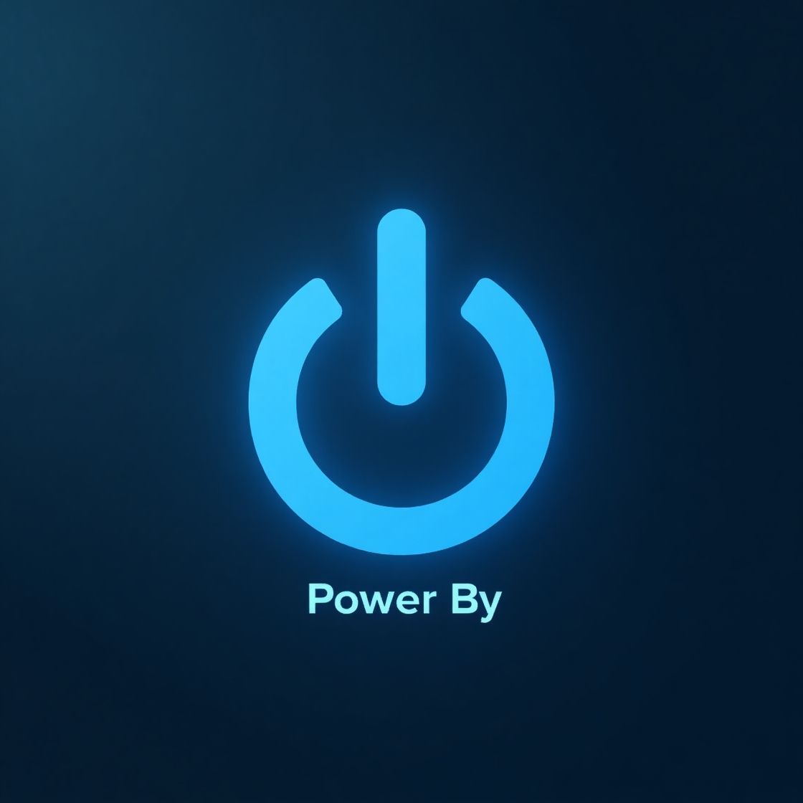

"Trabalhe de qualquer lugar, viva como quiser."
Como nômade digital, você pode trabalhar de onde quiser — seja numa praia paradisíaca, num café em Paris ou no conforto da sua casa. Aqui, você encontra os melhores cursos, ferramentas e dicas para começar sua jornada e transformar sua rotina em liberdade. Comece hoje a viver com mais propósito, flexibilidade e autonomia.
O que é nômade digital?
Um nômade digital é uma pessoa que utiliza a tecnologia para trabalhar de forma remota, sem estar presa a um local fixo. Com um notebook e uma boa conexão à internet, nômades podem viver em diferentes cidades ou países enquanto continuam produzindo, seja como freelancers, empreendedores ou funcionários de empresas remotas. É mais do que um estilo de trabalho: é um estilo de vida. Liberdade geográfica, flexibilidade de horários e a busca por experiências culturais diversas são marcas desse movimento que vem crescendo no mundo todo.
Como ser?
- Defina sua fonte de renda online
Antes de cair na estrada, é essencial garantir uma renda estável pela internet. Áreas como programação, design, redação, marketing digital, tradução ou ensino online oferecem ótimas oportunidades. para quem quer trabalhar de qualquer lugar do mundo.
- Organize sua vida financeira
Monte uma reserva de emergência de pelo menos 3 a 6 meses do seu custo de vida. Planeje seus gastos fixos, como moradia, alimentação, transporte, seguro saúde e coworking. Ter controle financeiro é o que te dará liberdade real para viver em qualquer lugar do mundo com segurança.
- Simplifique sua Vida
Adote um estilo de vida minimalista para facilitar sua mobilidade. Leve apenas o essencial e invista em itens de qualidade que facilitam sua rotina, como um bom notebook e acessórios compactos. Menos bagagem significa mais liberdade e menos preocupação em cada novo destino.
- Regularize sua Situação Legal
Cada país tem suas regras para trabalhadores remotos. Informe-se sobre os tipos de vistos disponíveis, como o “digital nomad visa”, e tenha seus documentos sempre em dia. Isso evita dores de cabeça e te permite aproveitar a experiência com tranquilidade e legalidade.

Vantagens
- Trabalho home office.
Liberdade para trabalhar de onde quiser, sem precisar enfrentar trânsito ou estar preso a um escritório fixo.
- Qualidade de vida.
Mais tempo para si mesmo, escolha de ambientes agradáveis e a possibilidade de equilibrar melhor vida pessoal e profissional.
- Liberdade geográfica.
Viajar e conhecer o mundo sem precisar tirar férias ou pedir licença do trabalho.
- Maior autonomia e flexibilidade.
Você define seus horários, sua rotina e os projetos em que quer se envolver..
- Crescimento pessoal e profissional.
Lidar com diferentes contextos e desafios estimula a adaptação, resiliência e aprendizado constante.
- Experiências culturais enriquecedoras.
Contato com novas culturas, idiomas e estilos de vida, o que amplia horizontes e estimula a criatividade.
Dê o Start👉
Comece aqui acessando os links dos curso ao lado, conquistar a liberdade de trabalhar de onde quiser. Com esses cursos, você pode se preparar para viver como um verdadeiro nômade digital. Aprenda habilidades que te permitem ganhar em dólar, euro ou real — independente da sua localização. Tenha acesso a conteúdos práticos, pensados para quem quer unir trabalho e viagem. Comece hoje mesmo a transformar sua rotina e construir uma carreira sem fronteiras.
Curso AI
Curso TypeBoot
Curso Power-by
Curso Execel